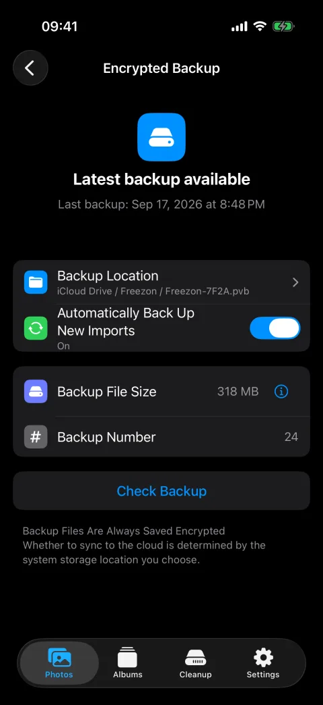

iPhone Hidden Album vs. Photo Vault: Which One Do You Actually Need?
When Apple Photos is enough, and when it helps to give your photos a password of their own.

If you only want to clear clutter or keep personal pictures out of your primary photo grid, Apple's built-in Hidden album is already enough. However, if you want a dedicated password so someone who knows your device passcode cannot open those photos, a standalone photo vault is the better choice.
Consider handing your unlocked iPhone to a friend to view party pictures or letting a coworker review a document. A borrowed, already-unlocked phone alone does not unlock the Hidden album; the concern is when the borrower also knows your device passcode. Because the Hidden album unlocks with that device passcode, anyone who knows it can access it. A vault ensures your sensitive photos stay locked even during shared phone moments.
Unlocking, Storage, and Backup at a Glance
| Feature | Apple Photos Hidden Album | Dedicated Vault (Freezon) |
|---|---|---|
| Unlocking | Face ID, Touch ID, or device passcode | Independent album password; optional biometrics for everyday items |
| Storage | System Photos library (flagged as hidden) | Encrypted on-device storage for selected items; no account needed |
| Backup | iCloud Photos sync when enabled on devices using the same Apple Account | Encrypted backup exported to Files or iCloud Drive; restored via Recovery Code |
Scenario 1: Handing Your Phone to Friends or Family
Starting in iOS 16, Apple locks the Hidden album by default with Face ID or Touch ID. If an unauthorized stranger picks up your locked phone, they cannot see your hidden items.
The limitation matters when the person borrowing your phone also knows your device passcode. Lending someone an unlocked iPhone does not by itself unlock the Hidden album, but someone who knows your device passcode can open it. Because iOS accepts your lock-screen passcode whenever biometric authentication fails or is canceled, anyone who knows your device PIN can open your Hidden album. For anyone with a shared passcode, the built-in album offers convenience rather than true separation.
Scenario 2: Setting an Independent Password Boundary
A dedicated vault solves this vulnerability by ensuring your device passcode cannot unlock your sensitive media.
“Freezon” for iPhone and iPad stores selected photos, videos, and Live Photos in encrypted local storage without requiring an account. Rather than relying on a single lock, it lets you set two distinct tiers:
- Everyday Album: Quick access using Face ID or Touch ID for items you browse regularly.
- Private Album: Protected by its own separate password that you define.
Even if someone knows your iPhone passcode, your Private Album remains locked behind a credential they cannot guess from your lock screen.
Crucial Detail: Originals Are Not Automatically Deleted
Importing saves encrypted copies first; removing the originals requires your confirmation.
When you import photos, videos, or Live Photos into Freezon, the app creates encrypted copies inside its protected storage. However, iOS permissions prevent third-party apps from silently deleting items from Apple Photos. Freezon can ask iOS to delete verified originals after import, or you can keep them and remove them later. Deletion requires your confirmation. To remove deleted originals immediately and permanently, also delete them from Recently Deleted in Apple Photos.
Controlled Backups: Making Your Decision
Backup management is another key difference. Apple Photos syncs across devices using the same Apple Account when iCloud Photos is enabled on each device; Freezon lets you choose where to store encrypted backups. Freezon lets you export an encrypted backup file to your chosen folder in the Files app (or iCloud Drive). You restore that backup on another iPhone or iPad using the file and its matching Recovery Code. Freezon does not automatically sync albums between devices; encrypted backup files may sync through the storage provider you choose, including iCloud Drive.

Which should you choose?
- Use Apple’s Hidden album if you never share your device passcode and only need a clean camera roll free of personal clutter.
- Choose an independent photo vault if others know your passcode, you want a dedicated password for private albums, and you prefer managing your own encrypted backups.
If you need that extra boundary, try Freezon for iPhone and iPad.